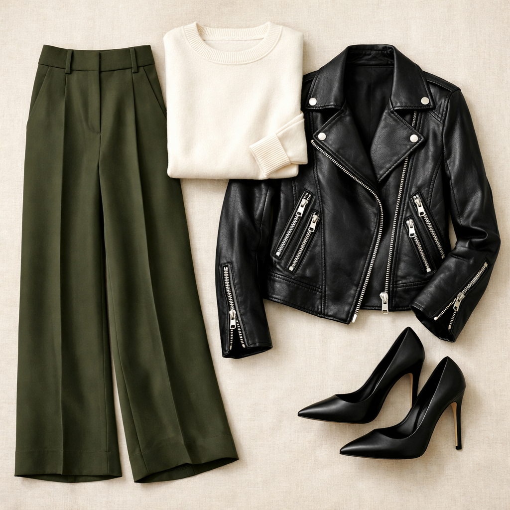
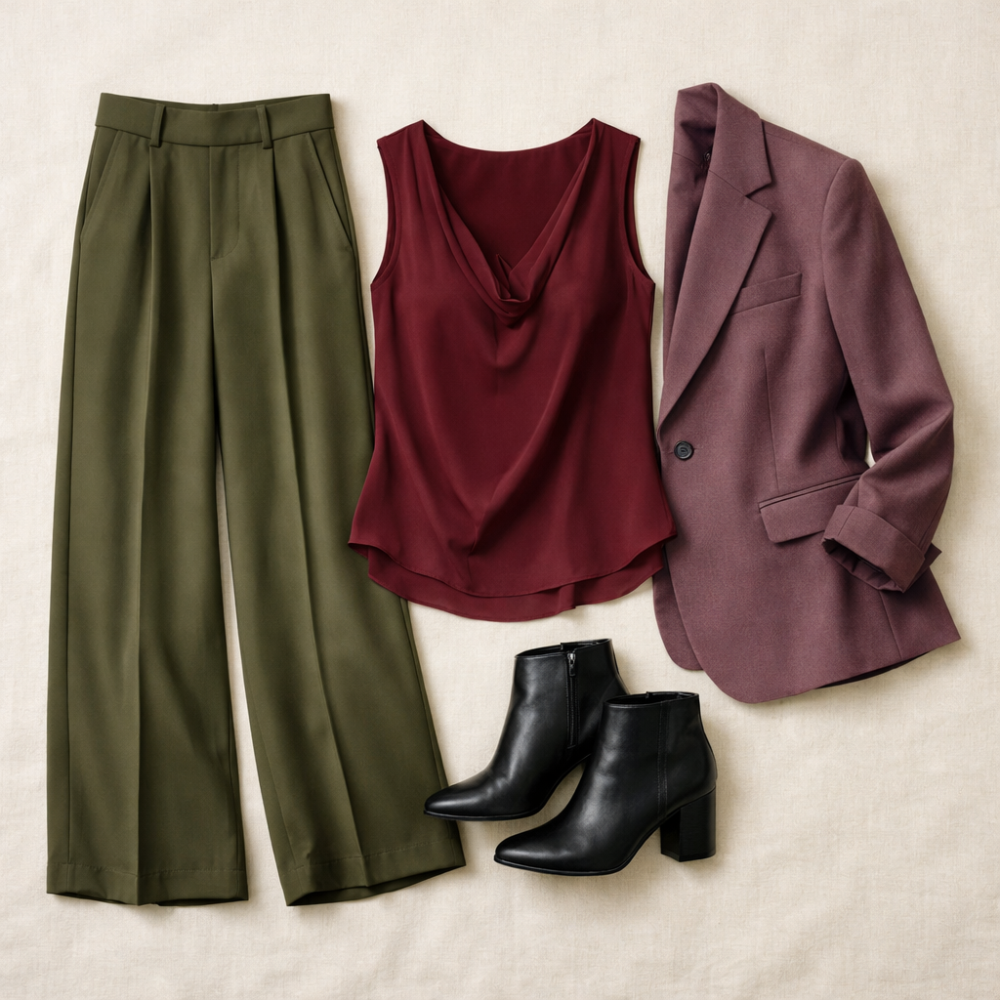
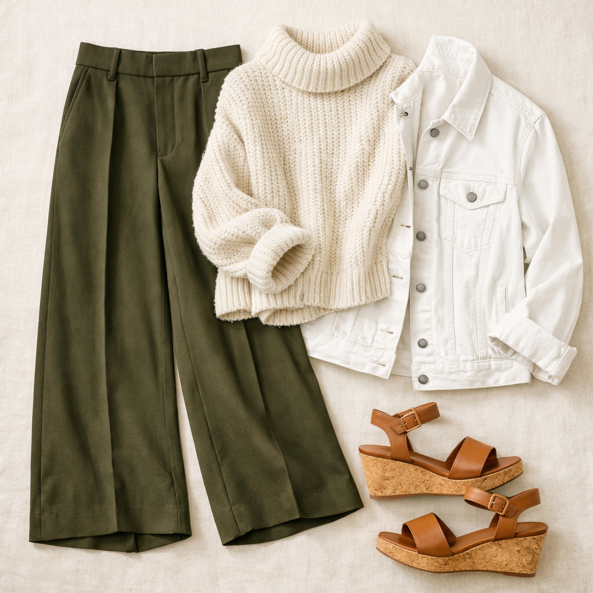

Lululemon
Daydrift Wide-Leg Trouser — Olive Brown
$148
Luxtreme® tech fabric that looks indistinguishable from a dress trouser but performs like activewear. This deep army olive brown is moody and sophisticated — boardroom at 9am, happy hour at 6pm without changing.
Shop NowWhy This Pick
Luxtreme fabric looks like a polished dress trouser but stretches and breathes like nothing else. The deep olive brown is the most wearable "army green" — it leans warm and plays beautifully with the full spectrum of neutrals, jewel tones, and creams in your wardrobe.
3 Ways to Wear It
Styled with pieces already in your closet

Look 1 — Boardroom Power
Ivory Calvin Klein sweater (#72) + Black moto jacket (#213) + Black stiletto pumps (#518). Olive trousers + ivory sweater + black leather moto is a power trio. The stilettos add the authority this look deserves.

Look 2 — Jewel-Toned Meeting
Maroon Daniel Rainn sleeveless blouse (#25) + Dusty mauve/plum blazer (#206) + Black ankle booties (#501). Olive + maroon is a stunning autumn-rich combination, and the mauve blazer adds a sophisticated layer that bridges the two jewel tones.

Look 3 — Effortless Elevated
Cream/oatmeal sweater (#83) + White denim jacket (#214) + Tan cork wedge sandals (#514). Light layers over rich olive — the white denim jacket brightens while the cork wedges add a relaxed spring energy.